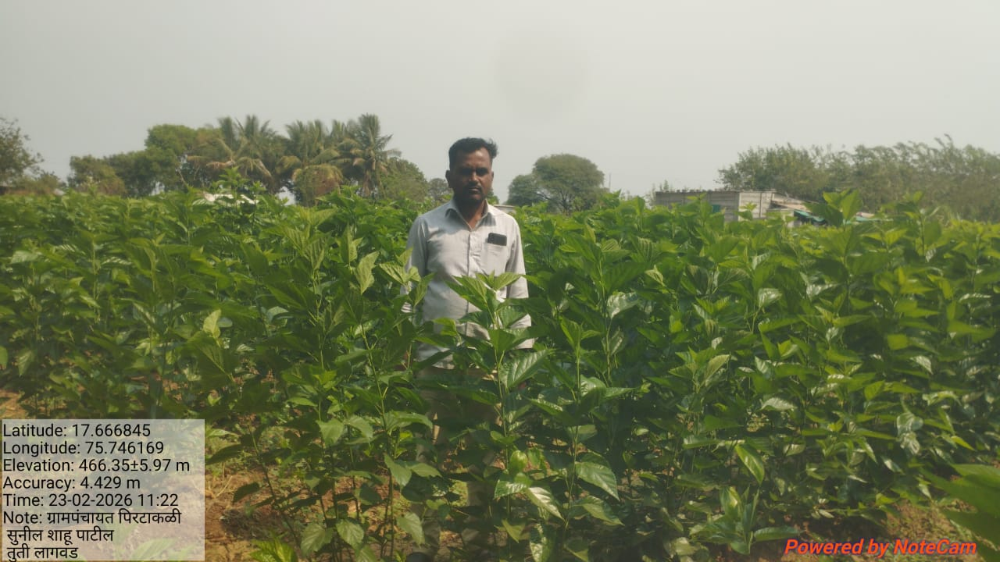
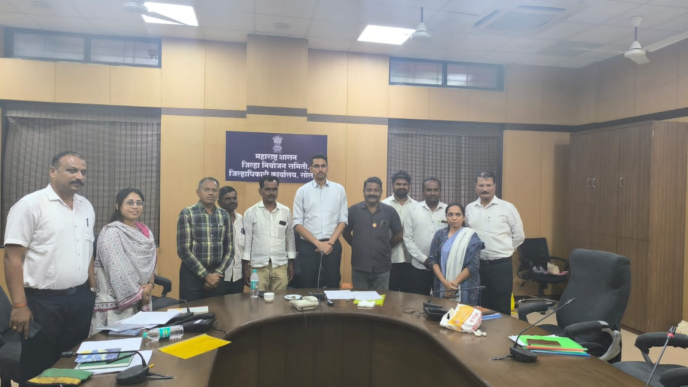
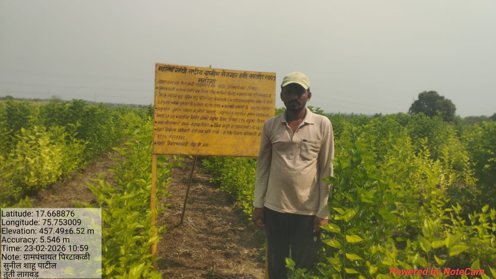

कृषी विभाग
कृषी विभागाच्या माध्यमातून शेतकऱ्यांची FARMAR ID साठी नोंदणी, DBT द्वारे दिले जाणारे लाभ, MGNREGA अंतर्गत अभिसरण योजनेअंतर्गत शेतकऱ्यांना ग्रामपंचायत पीरटाकळी कृषी समिती मार्फत लाभाच्या योजना v माहिती दिली जाते.
गावातील बहुतांशी लोकांचा व्यवसाय शेती असून शेतीमध्ये बहुतांश ऊस पिकाचे उत्पादन मोठ्या प्रमाणावर केले जाते त्याचबरोबर फळबाग लागवड व पारंपारिक शेती पिके घेतली जातात. तसेच शेतीस जोडधंदा म्हणून दुग्ध व्यवसाय तसेच रेशीम उद्योग व्यवसाय केला जातो या गावात रेशीम उद्योग अंतर्गत रेशीम शेती मोठ्या प्रमाणात केली जाते,येथे "रेशीम संचालनालय सोलापूर" यांचे कार्यालय मार्फत choki shed (रेशीम उद्योगातील लहानअळी, आंडीपुंज उत्पादन करणे)प्रकल्प मंजूर झाला असून सध्या प्रकल्पाचे कामकाज चालू आहे.
गावचे एकूण क्षेत्र हेक्टर असून त्यापैकी. क्षेत्र बागायती आहे
कृषी विभागाच्या माध्यमातून शेतकऱ्यांची FARMAR ID साठी नोंदणी, DBT द्वारे दिले जाणारे लाभ, MGNREGA अंतर्गत अभिसरण योजनेअंतर्गत शेतकऱ्यांना ग्रामपंचायत पीरटाकळी कृषी समिती मार्फत लाभाच्या योजना v माहिती दिली जाते.
गावातील बहुतांशी लोकांचा व्यवसाय शेती असून शेतीमध्ये बहुतांश ऊस पिकाचे उत्पादन मोठ्या प्रमाणावर केले जाते त्याचबरोबर फळबाग लागवड व पारंपारिक शेती पिके घेतली जातात. तसेच शेतीस जोडधंदा म्हणून दुग्ध व्यवसाय तसेच रेशीम उद्योग व्यवसाय केला जातो या गावात रेशीम उद्योग अंतर्गत रेशीम शेती मोठ्या प्रमाणात केली जाते,येथे "रेशीम संचालनालय सोलापूर" यांचे कार्यालय मार्फत choki shed (रेशीम उद्योगातील लहानअळी, आंडीपुंज उत्पादन करणे)प्रकल्प मंजूर झाला असून सध्या प्रकल्पाचे कामकाज चालू आहे.
गावचे एकूण क्षेत्र हेक्टर असून त्यापैकी. क्षेत्र बागायती आहे

